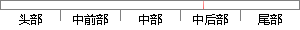

中提出的用多相滤波的方法降采样率来实现。
片段位置图

相似结果|
相似片段 1：——内插滤波器的设计方法。将此滤波器应用于采样率变换中，并结合多相滤波思想提出了一种高效的FRM采样率变换结构，此结构能极大降低采样率变换实现复杂度。最后通过设计实例，验证了此结构的高效性。关键词：软件
相似片段 2：各级滤波器的优势。3．2数宇重采样设计本节首先分析实现任意比例采样率变换数字重采样算法——基于拉格朗日插值的重采样算法，在此基础上提出一种基于多相滤波时变网络的重采样算法，电子科技大学硕士学位论文并讨论
|
※ 片段修改建议 ※
近似词参考：- 方法：方式 要领 法子
系统自动生成语句：中提出的用多相滤波的方式降采样率来实现。
注：本片段修改建议为系统自动生成，仅供参考。